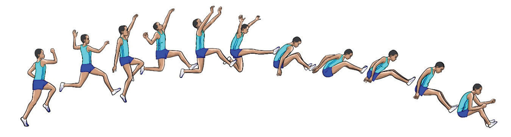
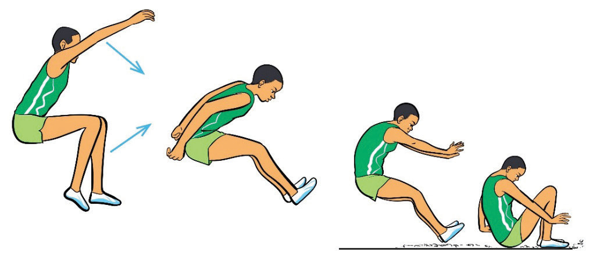

a
b
c
d
e
f
g
h
i
j
k
Landing
Landing involves taking heels as far away as possible from the take-off board. Proper landing maximises distance and ensures a safe, controlled finish. A well-executed landing helps athletes avoid losing distance by falling backwards or placing their hands behind them in the sand as shown in Figure 2.24. The following steps will help you practice landing:
(i)Keep the body upright and head looking forward;
(ii)Move arms down and backward to assist the upward movement of the legs; and
(iii)Keep arms in a forward position until landing is complete.

a
b
c
d
Long jump rules and regulation
The long jump event follows specific rules and regulations to ensure fair competition. The following are some of the rules:
(i)Athletes must take off from the take-off board without stepping beyond its front edge;